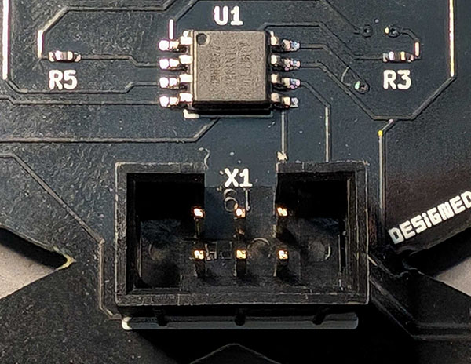
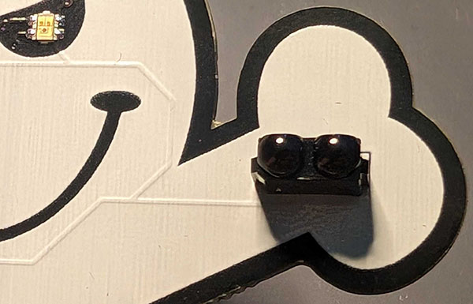
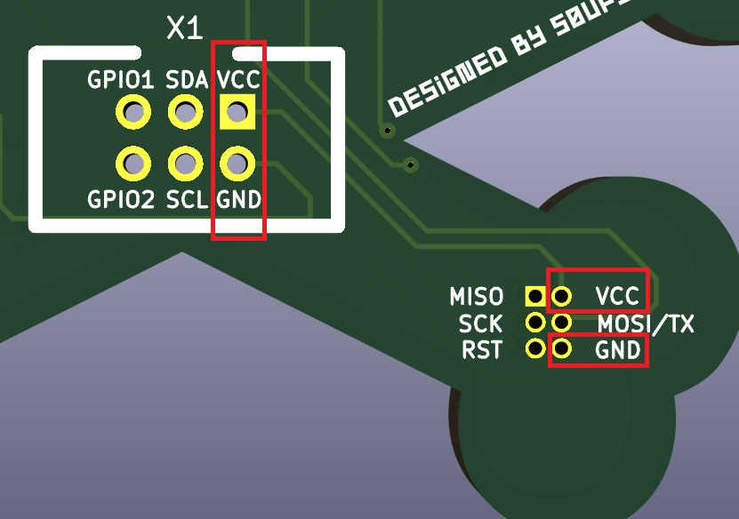

DEF CON 225 (DC225) is a local DEF CON group for the 225 area code and surrounding areas. 337, 318, 225, 504, and 985 area codes are represented.
DC225 is composed of students, professionals, researchers, and hobbyists that meet monthly and discuss current trends, topics, and research in the fields of computer security, digital forensics, and related.
Join our Discord and after con make one of our meetings! For more information check out defcon225.org.
The first step is to assemble your Simple Add-On (SAO) badge.
Within the anti-static baggie you should have:
The good news is that the majority of the components are already soldered onto the badge!
This includes one (1) ATTINY85V-10SU Integrated Circuit at the U1 position, four (4) RC0402JR-07100RL 100 OHM 5% 1/16W SMD resistors at the R3, R4, and R5 positions, two (2) RC0402JR-07300RL 300 OHM 5% 1/16W SMD resistors at the R1 and R2 positions, and two (2) EAST1616RGBB4 RGB SMD LEDs.
So that leaves the two through-hole components included within the anti-static bag.
First place the badge face down (that's the white side of the badge down). Then insert the Six (6) Position Vertical Connection Header so that the notch of the plastic matches the notch found in the white silkscreen (where the X1 label is). Rotate the badge ensuring the component doesn't fall out and then begin soldering the six (6) leads to the board. Here's a reference image:
Next, take a quick look at the TSOP39338 Sensor component. Notice how the face of the component has two circles and that one side of those circles is flat. We'll consider this flat side the top. With the badge face up (again that's the white side...) insert the TSOP39338 Sensor so that the flat side of the circles is up. Again flip the badge over making sure the component doesn't fall out and carefully solder the four (4) leads ensuring not to bridge any of the connections. Here's another picture:
That's all for the assembly! Now just plug the badge into your con badge's SAO connector or supply 3.3v of power and the LEDs should illuminate!
Now it's time to try your hand at the CTF!
There are flags (this is a CTF after all). Find them! You will need a way to send infrared signals.
If you have any questions find s0ups or one of the DC225 folks or hit me up at @ynots0ups.
Thanks for playing!
There are two options - either via the 6-pin SAO connector or the labeled programming headers. Here's an image to help:
You can find the ATTiny's datasheet here. For the DC225 SAO badge, here are the relevant connections: